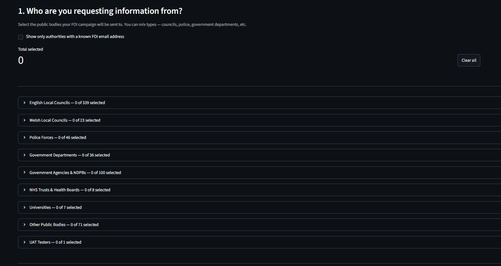
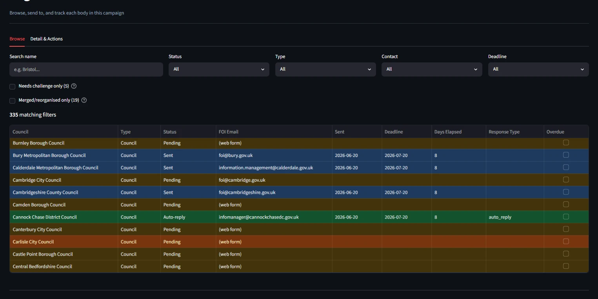

Hundreds of FOI requests. Zero missed deadlines.
The private way to run UK Freedom of Information campaigns at scale, for journalists, consultancies, NGOs and researchers who need to reach dozens or hundreds of public authorities without losing track of a single statutory deadline.
Need the data now? We'll run the campaign for you.
Give us the question you need answered, and we run the whole Freedom of Information campaign end to end, from a handful of public authorities to several hundred. The requests go out in our name, so yours never reaches the authority. You get clean answers back.
- We word the requests so authorities have to answer, not refuse
- We send to every relevant public authority: councils, police forces, government departments, NHS bodies
- We track every deadline, chase the late ones, escalate to the ICO
- You get a structured spreadsheet and a plain-English summary
- Private request£95Up to 10 public authorities. Your name never appears.
- Campaign£450Up to 100 public authorities, such as every police force or one region's councils.
- National£750Up to 400 public authorities, such as every council in England.
How it works
Four steps, the same for ten public authorities or three hundred.Choose your public authorities
Councils, police forces, government departments, NHS bodies and more, grouped and searchable, with a running total as you go.

Write your questions once
Add your FOI questions, and the platform tracks each one individually as replies come in, not just a single status per letter.
Send, and let the deadlines track themselves
Every request is tracked against the statutory 20-working-day clock, with automatic chasers when authorities go quiet.
Get the answers, not just the emails
Replies are read question by question, answered, refused, or claimed not held, with the extracted figures pulled out for you.

Who's behind it
FOI Director is part of Optima Information & Research, founded by Darren Hale. Thirty years inside UK local government, including as a service head in a London Borough, followed by years running a business in the private sector, means knowing both how authorities handle information requests and what it takes to deliver for a paying client. That experience is built into the platform, and it's what you get when we run a campaign for you.
Common questions
How is this different from WhatDoTheyKnow?
Your requests stay private rather than published. You can send to hundreds of authorities at once, track every statutory deadline with automatic chasers, get responses classified question by question, and export the data as a clean spreadsheet, with unlawful barriers flagged and a ready-to-send ICO complaint.
Can you just run it for me?
Yes, that's available now, ahead of the self-serve platform. Tell us the question you need answered and we handle the whole campaign: wording, sending, chasing, escalation, and a finished dataset with a summary. Fixed prices from £95, no subscription.
Can I keep my name off the request?
Yes. Requests go out in the name of Optima Information & Research, so the public authority never sees who asked. FOI is meant to be applicant-blind, but many organisations would rather not rely on that.
Who is it for?
Investigative journalists, consultancies and researchers gathering data across many authorities, and NGOs and campaign groups building an evidence base for advocacy.
Is it lawful, and what about my data?
Everything is done under the Freedom of Information Act 2000, and your information is handled in line with UK GDPR. The hosted platform launches only once its security and data-protection work is complete.
Where things stand
The managed service is running now. The hosted, self-serve platform is in development. We're finishing the security and reliability work a system handling your email account and FOI correspondence should have: encrypted credential storage, GDPR documentation, and an independent security review. Register interest below and we will let you know when it opens.
Register interest in the self-serve platform
No spam, just one email when the hosted version opens. Need data now? Have us run it for you.
By registering, you'll only hear from us about FOI Director. See our data handling page for how we treat your information.